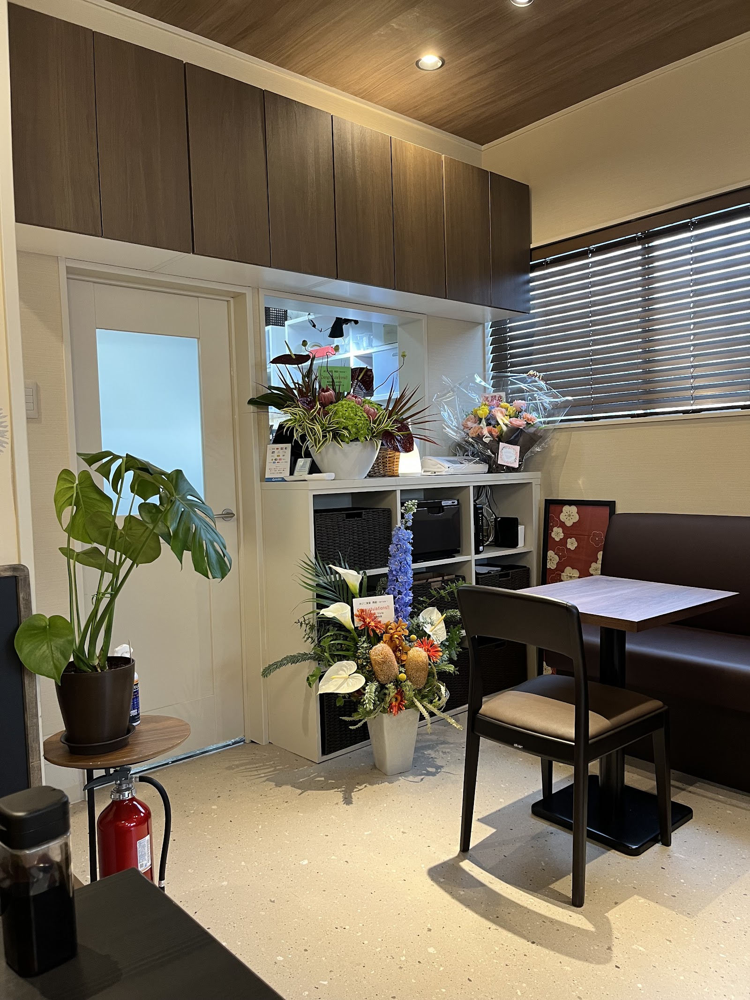
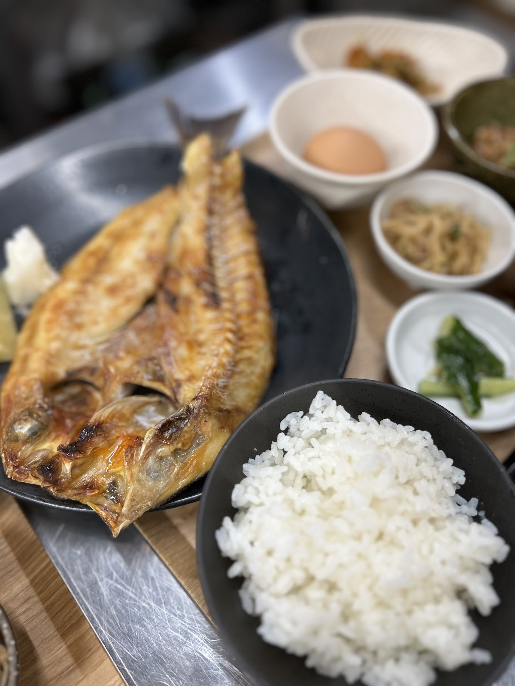
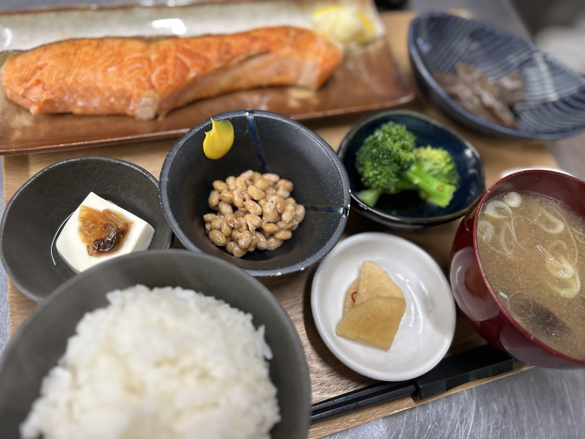
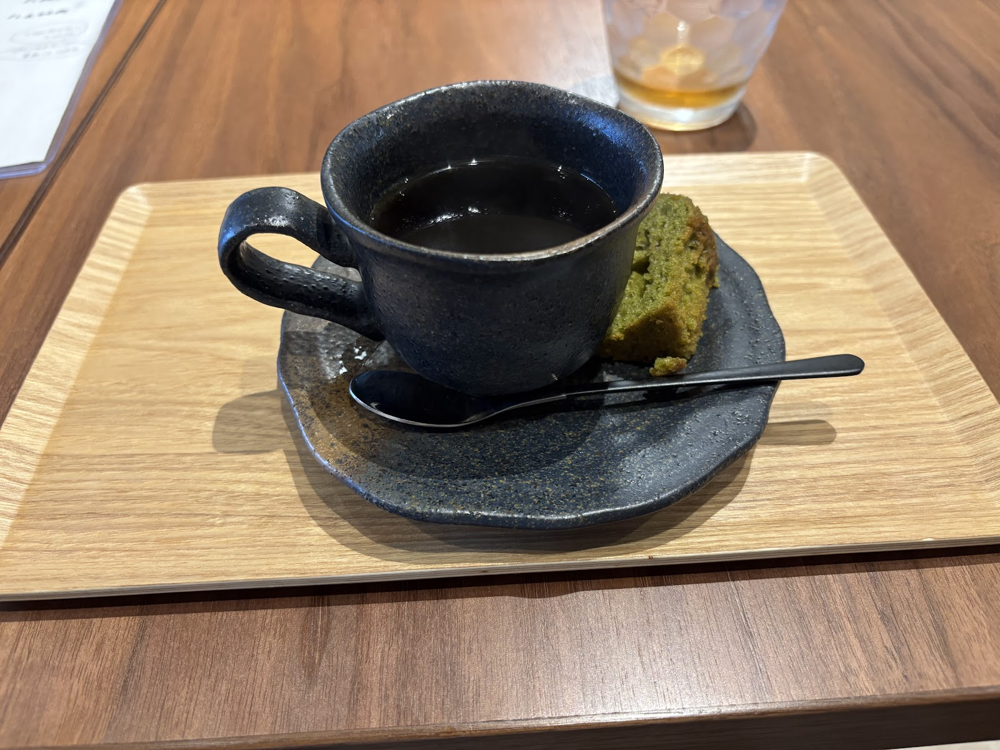
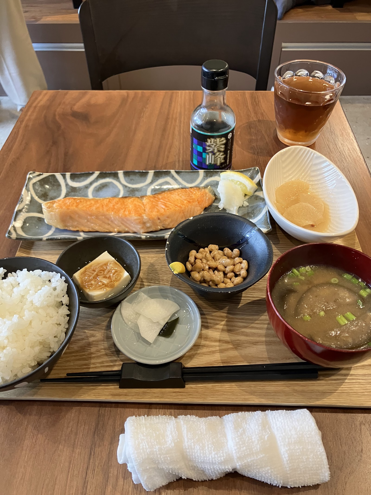
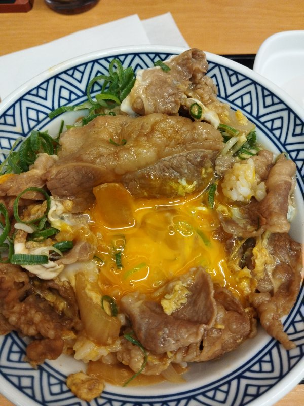

木目が落ち着く、店内の様子
Photo: 三浦恭平(Google マップ)
写真でみる、お店の様子

木目が落ち着く、店内の様子
Photo: 三浦恭平(Google マップ)

焼き魚と小鉢が並ぶ定食のイメージ
Photo: あびこ食堂 燕屋 -enya-(Google マップ)

納豆や味噌汁など、品数豊富な定食の一例
Photo: あびこ食堂 燕屋 -enya-(Google マップ)

コーヒーとひと息つけそうな焼き菓子
Photo: *ゆう(Google マップ)

食卓に並ぶ、鮭の定食の一例
Photo: m Suzuki(Google マップ)

卵とじの丼もののイメージ
Photo: ひで(Google マップ)